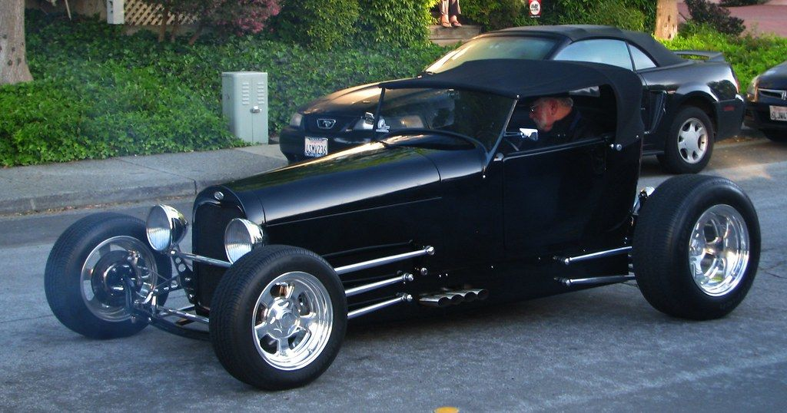
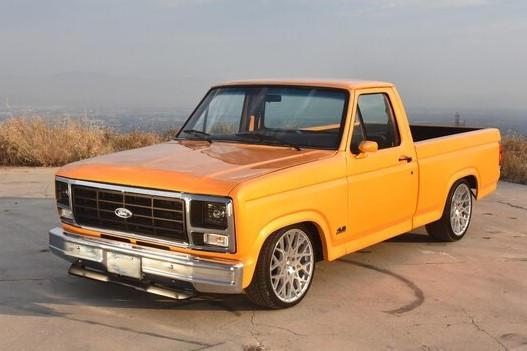

10. VOLKSWAGEN PASSAT
Models Sold: Over 15 million
Launched in 1973, Volkswagen spent years marketing the Passat under names like Dasher and Quantum in the U.S. But no matter what the company called it, the Passat has been a huge seller around the world. Larger and more luxurious than the Jetta, the Passat wasn’t the sales success known and loved today until Ferdinand Piech, former chairman of the Volkswagen Group, got his hands on it. Its refined, solid construction, strong engines, and classy styling are what set it apart.
Click to see more images9. FORD MODEL T
Models Sold: Over 15 million
From 1908 to 1927, Ford officially over 15 million Model Ts but due to spotty record keeping, that number might actually be much higher. For many Americans the Model T was the first truly affordable car that anyone could own. It was also simple, reliable, and tough as nails. Simply put, its success marked the beginning of the modern automotive industry, and made Detroit the center of the universe when it came to cars.
Click to see more images8. HONDA ACCORD
Models Sold: Over 17 million
It’s gone through many transformations since its induction into the Honda lineup in 1976, but one thing about the Honda Accord has remained constant: It sells in droves. In the ’70s, the car’s build quality, reliability, and value made it a revelation. But by the late 1980s, the car became a sales juggernaut. Today, it offers efficiency and good driving dynamics at an affordable price, and can do everything most families need.
Click to see more images7. FORD ESCORT
Models Sold: Over 18 million
You might remember it as the junky, rusty car that your neighbor had, but in Europe (especially the U.K.), the Ford Escort is a legend. A completely different animal from the boxy car we Americans got in the ’80s, the Escort was launched overseas in 1968, and quickly developed a reputation for being a sensible, fuel-efficient runabout as well as a legendary rally car. It was replaced by the Focus, which could someday overtake it on this list.
Click to see more images6. HONDA CIVIC
Models Sold: Over 18 million
It seems that most people either owned know someone who owned a Honda Civic. Most importantly, most people like Civics. The car, like the Toyota Corolla or Ford Escort, is one of those front-wheel-drive commuter cars that’s reliable and versatile. But its ubiquity and easy to modify platform also makes it a gateway car to generations of enthusiasts around the world. Simply put, the Civic is an icon.
Click to see more images
5. LADA RIVA
Models Sold: Over 19 million
The VAZ 2101 has gone by many names, including the Lada 1200 and the Lada Riva. Launched in 1970, It was a re-engineered Fiat 124, which itself dated to 1966. Astonishingly, the 2101 remained in production until 2012, though it had barely changed since the early 1980s. It wasn’t a necessarily impressive car; in fact, it was pretty terrible. But it was one of the few models people behind the Iron Curtain could afford, and their bulletproof reliability means that millions are still on the road today.
Click to see more images4. VOLKSWAGEN BEETLE
Models Sold: Over 23 million
We’re including both the classic Beetle and the newer versions of the car in this number. Launched in 1938, the Beetle (sold as the Volkswagen or Type I for most of its production run) took the world by storm in the 1950s and ’60s, becoming a cultural icon in the process. Newer versions of the car haven’t be quite as successful at connecting with the culture, but the model has managed to carve out a niche of its own. Astonishingly, the original car remained in production until 2003. Who knows how long the New Beetle will last.
Click to see more images3. VOLKSWAGEN GOLF
Models Sold: Over 30 million
Simply put, the Golf saved Volkswagen as it tried to figure out where to go in a post-Beetle world. Offered in a number of trims over the years, from economical diesel commuters to legitimately sporty GTI and Golf R versions, the Golf is fun to drive, comfortable, good looking, versatile, and as reliable as it gets. Who could ask for anything more?
Click to see more images
2. FORD F-SERIES
Models Sold: Over 40 million
Ford’s F-Series pickup has been America’s best-selling truck since 1977, and the country’s best-selling vehicle since 1983. Tough, long-lasting, and capable of hauling huge loads or towing big trailers, the model dates back to 1948, meaning F-Series fans have been buying the same truck for generations. This means Ford’s truck has one hell of a dedicated base.
Click to see more images
1. TOYOTA COROLLA
Models Sold: Over 43 million
The Toyota Corolla isn’t very exciting, but it’s darn useful. Launched in 1966, the Corolla offered good levels of comfort, practicality, and reliability at an affordable price. And it doesn’t quit; one quick scan of the roads and you’ll likely find generations of Corollas still out there. Today, there are other cars out there that have similar attributes, but hardly any of them can do it as simply and easily as the Corolla.
Click to see more images